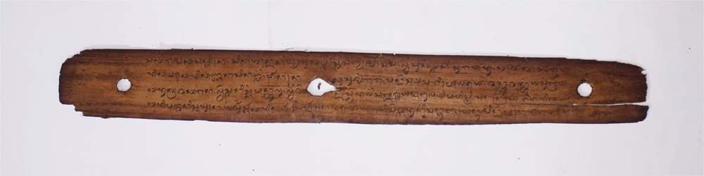

RENGGANIS
-

Ejaan Latin:
5. sesek misah Ian merada. teajah sesek kelambi, kelambi ndeqna legait, sesek sutera gulunggulung, umbak nungsok lan permas, sukelat dewangga wilis. hiderak kuning luderak ijo lan beaq. Sesekaln sejelo doang. dua lembar banjuma jari, mapan simula pegawean, bekanti ia lan datu jim, sangkaq denda La Rengganis, mula maraqna jim pacu, angkaq tao ia nyiliman, kelelaman bareng angin, pepatutan karemen tuting lan basa. Sedeng beleqna nyempaka, alus mulus maraq mas sanglin alisna maraq tetulis,lamunna cemur bemanik, manis maraq madun kenyeruh. munta dingin telih panas, ia minangka jari jampi, prenane seger kenyang maraq bengan. Kelampana maraq wayang, jari sarin bawon bumi, masuhur maka sailalam, tekasupang subawaq langit, ndeq araq kancana tanding, temeta datengan Pujut, timaq laiq Kateng Jonggat. yadian Ungga Kediri. goyo Rincung soroh nai basengkelat.
Arti Indonesia:
5. menenun, meminlal dan melukis, di ajarkan menggunting baju, buju bersulam berenda indah, tenun sutra bergulung-gulung, corak mengalun dan menyilu, kain songket warna dewangga hiju, kuning ludrek hijau dan merah, Hasil tenunan delam sehari, dapat menyelesaikan dua lembar, karena keahlian mereka. persahabatan dengan datu jin, sang Dewi Rengganis, dapat menghilang seperti jin, mengapa bisa dia seperti siluman, dan bisa terbang bersama angin, pandai pula menjalin sastra. Tubuhnya bagaikan kembang cempaka, halus mulus lembut berseri, alisnya bagaikan dilukis, bila berkata menyungging senyum, manis bagaikan tetesan madu lebah, buat penawar sakit panas dingin, sebagai obat rindu duka lara, segar bagaikan jampi yang sakti. Jalannya lenggang gemulai. bagaikan bunga mekar di bumi. tersyahur suluruh dunia, menjadi buah bibir setiap insan, tiada menjadi bandingannya, biar dicari di negeri Pujut, atau diwilayah Jonggat, di Jenggala maupun di Kediri. apalagi dikawasan Rincung.
Arti Inggris:
5.